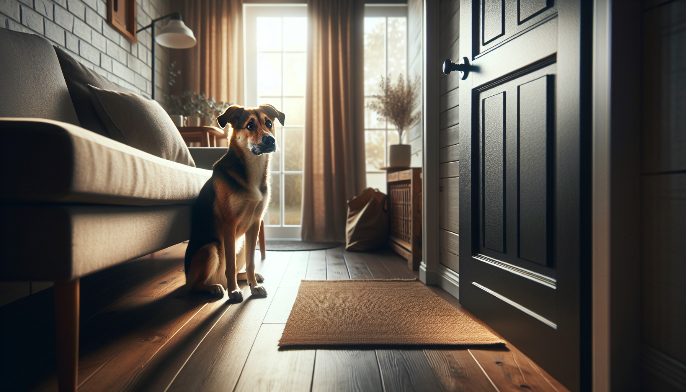

If your dog panics when you leave the house, you are not alone—and neither is your dog. Separation anxiety in dogs is one of the most common behavior challenges dog owners face, especially with new puppies, rescue adopters, and dogs adjusting to a major life change. The good news is that separation anxiety is not a sign of stubbornness, spite, or a “bad dog.” It is a stress response, and with the right plan, many dogs can make real progress.
In this guide, we will cover the most common signs of separation anxiety in dogs, what may cause it, how to tell it apart from normal boredom, and practical, science-backed solutions you can start using right away. Whether you have just brought home a rescue dog or you are trying to help a puppy learn to stay home calmly, understanding the problem is the first step toward helping your dog feel safe.
Separation anxiety is a distress disorder that happens when a dog becomes extremely upset when separated from a specific person or left alone. While many dogs prefer company, separation anxiety goes beyond mild disappointment. A dog with true separation anxiety may show panic-related behaviors within minutes of an owner’s departure.
This condition can range from mild to severe. Some dogs whine and pace for a short time, while others may bark nonstop, destroy doors or windows, drool excessively, or even injure themselves trying to escape. Because the behavior often happens only when the owner is gone, many people do not realize how serious it is until neighbors complain, a camera captures the behavior, or damage appears around the home.
It is important to remember that anxiety-based behavior is not a training failure. Your dog is not trying to punish you for leaving. They are having a hard time coping with being alone.
The signs of separation anxiety can look different from dog to dog, but several patterns are especially common. These behaviors usually happen only when the dog is alone or anticipates being left.
Excessive barking, whining, or howling after you leave
Pacing in repetitive patterns, often near doors or windows
Destructive behavior focused on exits, crates, blinds, or furniture
Inappropriate urination or defecation, even in house-trained dogs
Heavy drooling, panting, trembling, or refusal to eat when alone
Following you from room to room and showing distress during pre-departure cues
Attempts to escape confined areas, sometimes causing injury to teeth, paws, or nails
Many dogs also react before you even leave. If your dog becomes anxious when you pick up your keys, put on shoes, grab a bag, or head toward the door, that anticipation may be part of the problem. These “pre-departure triggers” can become powerful signals that predict being left alone.
There is no single cause of separation anxiety in dogs. Instead, it usually develops from a mix of genetics, life history, environment, and stress. Some dogs are naturally more sensitive or easily aroused. Others may develop anxiety after a major change in routine.
Common contributing factors include:
Being rehomed or adopted from a shelter or rescue
Sudden schedule changes, such as an owner returning to work after being home more often
Moving to a new home
Loss of a family member or animal companion
Limited experience being alone as a puppy
Underlying noise sensitivity or generalized anxiety
Rescue adopters often see separation-related distress early on, but that does not mean the dog is “damaged.” It often means the dog is still adjusting, building trust, and learning what to expect in a new environment. Puppies can also struggle if they are rushed into long periods alone before they have gradually learned independence.
This distinction matters because the best solutions depend on the real cause. A bored dog may chew shoes, raid the trash, or dig in the yard, but they are usually not in a state of panic. Anxiety tends to look more intense, urgent, and focused on escape or reunion.
A bored dog may:
Settle after some activity
Eat treats or food puzzles when alone
Show destructive behavior that is playful or opportunistic
Improve with more exercise and enrichment alone
A dog with separation anxiety may:
Refuse food when you are gone
Begin panicking within minutes of departure
Target doors, windows, or crates in attempts to escape
Show salivation, shaking, or frantic vocalizing
If you are unsure, use a pet camera to observe what happens in the first 30 to 60 minutes after you leave. Video can reveal patterns you would otherwise miss and is also helpful if you plan to consult a trainer or veterinarian.
When you are frustrated, it is tempting to correct the behaviors you can see—chewed trim, scratched doors, complaints from neighbors—but punishment does not fix separation anxiety. In fact, it often makes it worse by increasing fear and uncertainty.
Avoid these common mistakes:
Do not punish your dog after you come home to a mess or damage
Do not use bark collars or other aversive tools for anxiety-based behavior
Do not force long absences while your dog is already struggling
Do not assume crate training will solve it; some anxious dogs panic more in crates
Instead, think in terms of treatment, not discipline. Your goal is to help your dog feel safe enough to stay under their stress threshold while slowly learning that alone time is manageable.
The most effective treatment for separation anxiety usually combines behavior modification, management, and sometimes veterinary support. Improvement can take time, but consistency matters more than perfection.
1. Start with gradual desensitization. Teach your dog that short absences are safe by beginning with durations they can handle without panicking. That might be just a few seconds at first. Leave, return calmly, and repeat many times before increasing duration. The key is to progress slowly enough that your dog stays relaxed.
2. Work on pre-departure cues. If keys, shoes, or coats trigger anxiety, practice these cues without leaving. Pick up your keys, then sit down. Put on shoes, then make coffee. This helps weaken the association between those signals and panic.
3. Build independence while you are home. Encourage your dog to settle on a bed nearby instead of following you constantly. Use calm reinforcement when they relax on their own. Baby gates, mats, and structured settle exercises can help create small moments of comfortable distance.
4. Increase enrichment—but don’t rely on it alone. Food puzzles, snuffle mats, lick mats, and safe chews can support a training plan, especially for mild cases. However, enrichment by itself usually will not resolve true separation anxiety if your dog is too stressed to engage with food.
5. Meet physical and emotional needs. Adequate exercise, predictable routines, sleep, sniffing opportunities, and reward-based training all support emotional regulation. A dog with unmet needs may find it even harder to cope with alone time.
6. Consider background support. Some dogs do better with white noise, closed curtains, or a calm resting area away from front windows. Reducing environmental triggers can lower overall arousal.
7. Talk to your veterinarian. For moderate to severe cases, medication can be an important part of treatment. This is not a shortcut or a failure. For some dogs, reducing panic enough to learn is exactly what makes behavior modification possible.
If you are starting early, prevention and early intervention can make a huge difference. Here is a simple framework:
Practice very short alone-time sessions every day
Return before your dog becomes distressed
Keep departures and arrivals calm and low-key
Use a consistent safe area with comfortable bedding and enrichment
Track your dog’s successful duration in a notebook or app
Gradually increase time only when your dog is staying relaxed
For rescue dogs, remember the adjustment period can be significant. Many dogs need time to decompress before their full behavior picture appears. Be patient, keep routines predictable, and avoid overwhelming them with long absences too soon.
If your dog is injuring themselves, having accidents despite being house-trained, vocalizing for long periods, or unable to tolerate even very short absences, it is time to seek support. Look for a qualified, reward-based trainer or a board-certified veterinary behavior professional with experience in separation anxiety. The earlier you intervene, the better the outcome is likely to be.
Professional guidance is especially valuable if progress stalls, if your dog has multiple anxiety issues, or if you are not sure whether the problem is separation anxiety, isolation distress, confinement distress, or something medical.
Separation anxiety in dogs can feel overwhelming, but it is treatable, and your dog is not giving you a hard time—they are having a hard time. By recognizing the signs early, avoiding punishment, and using a gradual, science-backed training plan, you can help your dog build confidence and feel safer when alone.
Whether you are raising a puppy, supporting a newly adopted rescue, or helping an adult dog through a routine change, progress starts with empathy and consistency. Small wins count. A calm 30 seconds becomes a calm 2 minutes, then 10, then more. With patience and the right support, many dogs learn that being alone does not have to be scary.
Get our full Dog Training eBook series — new titles added weekly.